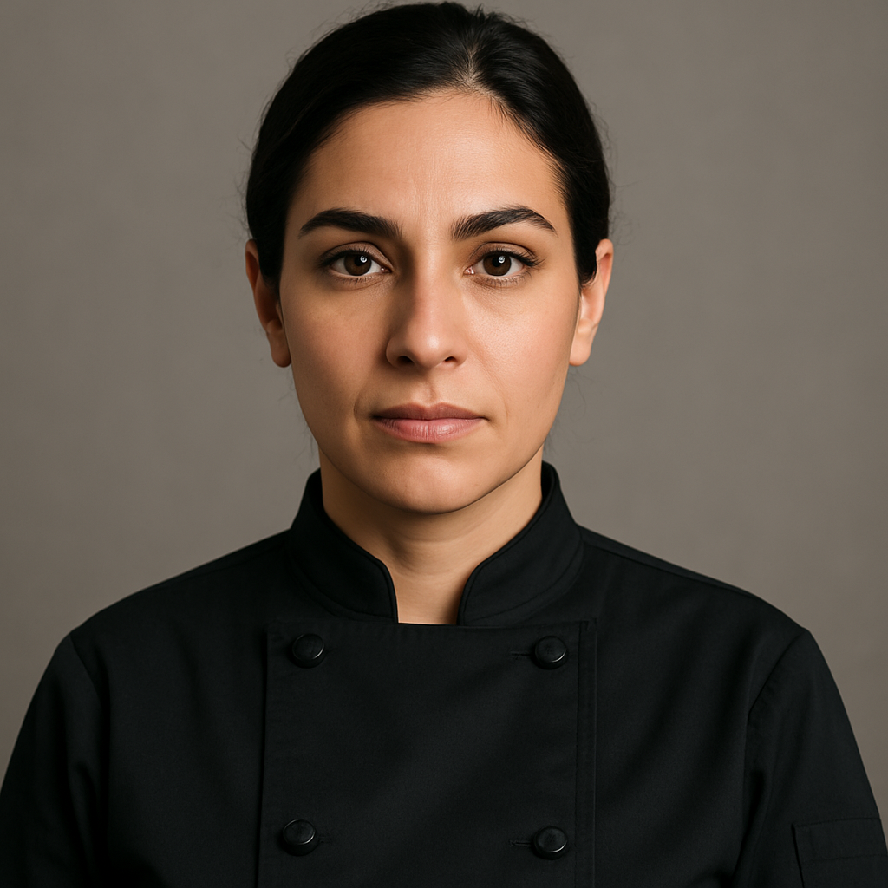
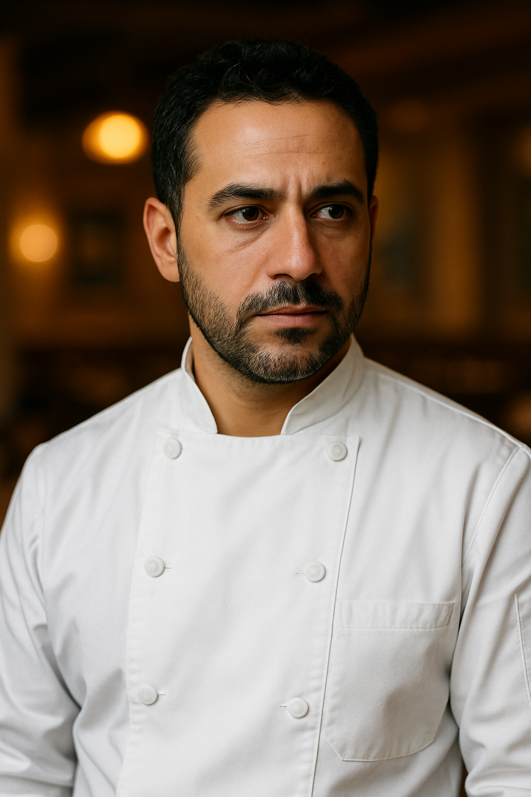
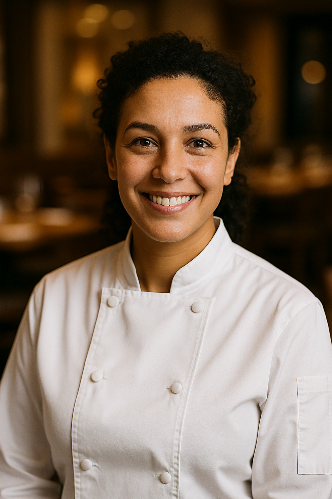

Our Story
Taste of Levant began as a small family project in 2015, founded by Chef Layla Mansour, who wanted to share her grandmother's treasured recipes with a broader audience.
Born in Beirut and raised in a household where food was an expression of love and heritage, Layla spent countless hours in the kitchen with her grandmother, learning the precise techniques and secret ingredients that made their family meals so memorable.
After moving abroad and witnessing how Middle Eastern cuisine was often misrepresented or simplified, Layla became passionate about preserving authentic recipes and educating others about the rich culinary traditions of the Levant region.
What started as a small blog has grown into a vibrant community of food lovers, cooking classes, and this recipe resource – all dedicated to bringing authentic Middle Eastern flavors to kitchens worldwide.

Our Mission
"To bring authentic Middle Eastern food to your kitchen, preserving traditional techniques while making them accessible to home cooks of all skill levels."
Authenticity
We're committed to preserving traditional recipes and techniques, respecting the heritage and cultural significance of each dish.
Education
We believe in sharing not just recipes, but the history, context, and stories behind the food of the Levant region.
Accessibility
We strive to make traditional Middle Eastern cooking techniques approachable for cooks of all backgrounds and experience levels.
Meet Our Team

Layla Mansour
Founder & Head Chef
Specializing in traditional Levantine cuisine with a focus on preserving family recipes passed down through generations.

Omar Haddad
Pastry Chef
An expert in Middle Eastern sweets and pastries with training in both traditional techniques and modern approaches.

Nadia Khalil
Culinary Instructor
With a background in culinary education, Nadia excels at breaking down complex techniques for home cooks.
Our Values
Sustainability
We prioritize seasonal ingredients and sustainable cooking practices, honoring the traditional Middle Eastern approach to using what's fresh and available.
Community
Food brings people together, and we're dedicated to fostering a welcoming community of Middle Eastern food enthusiasts from all backgrounds.
Passion
Our love for the flavors, techniques, and traditions of Middle Eastern cuisine drives everything we do.
Respect
We honor the cultural heritage and significance of traditional dishes, acknowledging their origins and history.
Join Our Culinary Journey
Discover the flavors of the Middle East through our recipes, courses, and community.